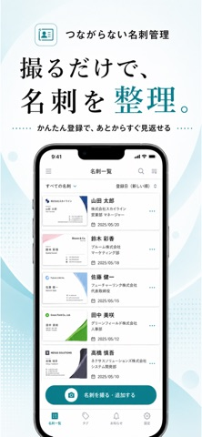

名刺を取り込む
名刺を撮影し、読み取った氏名や会社名、連絡先を確認します。
名刺は、必要なときに見返せればいい。
つながらない名刺管理は、撮影した名刺を整理し、名前や会社名で探せるiPhoneアプリです。相手に通知せず、自分のペースで名刺を管理できます。
App Storeで見るiPhone / iOS 17.0以降 · 価格・対応端末はApp Storeをご確認ください

HOW TO USE
名刺を撮影し、読み取った氏名や会社名、連絡先を確認します。
読み取り結果はその場で修正。うまく読み取れないときは手入力や画像のまま保存する方法も使えます。
名前や会社名で検索。フォルダやメモを使って、会った相手を思い出しやすくします。
FEATURES
名刺の相手への通知、自動的なつながり、保存した名刺の公開はありません。
連絡先だけでは思い出せない相手も、名刺の見た目やメモから振り返れます。
読み取りを確定情報として扱わず、確認・修正してから名刺帳に保存します。
FAQ
相手に通知する機能や、人脈SNSとして自動的につながる機能はありません。
自動抽出では、読み取った文字列とメールアドレス周辺の画像を、開発者の解析用サーバー経由でOpenAI APIへ送信します。保存した名刺帳をサーバーへ同期する機能はありません。詳しくはプライバシーポリシーをご確認ください。
文字や連絡先を確認・修正してください。自動抽出が使えない場合も、手入力や画像のまま保存する方法があります。
データの取り扱いはプライバシーポリシーをご確認ください。
1.4.5では、名刺の読み取りに関する通信エラーの調査・対応を改善しました。
2026年10月18日確認：バージョン 1.4.5。最新の配信状況はApp Storeをご確認ください。